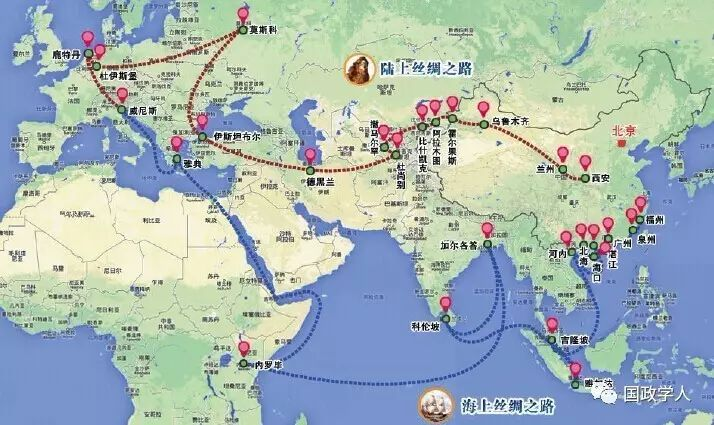

收录于合集

文章来源：中国经济报告

建设丝绸之路经济带展示地缘经济大战略
丝绸之路经济带由中国提出并大力推动。如果我们把丝绸之路经济带的建设理解为国家行为，则这的确是中国提出的具有现实意义与历史价值的重大地缘经济战略。
第一，建设丝绸之路经济带是中国与丝绸之路经济带沿线国家经济联系的复兴。中国、哈萨克斯坦、吉尔吉斯斯坦三国联合申请丝绸之路世界文化遗产获得成功，不仅传承了古老的历史记忆，而且昭示着丝绸之路经济带未来的合作方向。传统意义上的丝绸之路是中国历史上综合国力强大时形成的。丝绸之路的历史性开拓，不是建立在战争征服的基础上，而是建立在合作共赢的基础上。现代丝绸之路经济带也是在中国综合国力强大的基础上提出的，但具有鲜明的时代性。
第二，建设丝绸之路经济带体现中国更加平衡、多元的开放观。到20世纪末时，中国的地区不平衡性问题已经十分突出。2012年，西北五省区陕西、甘肃、青海、宁夏、新疆对外贸易总额占全国对外贸易总额的比重不到2%，外资所占比例不超过5%，与西部大开发之初相比没有明显变化。建设丝绸之路经济带，将使西部处在全国向西开放的前列，把一个封闭区域转变为开放区域，促进西部适应外向型经济发展进行结构调整。
第三，建设丝绸之路经济带可以产生巨大的经济效益。丝绸之路经济带沿线国家资源禀赋相异，产业结构不同，各国经济发展具有较强的互补性，其中，中国与中亚国家不仅同处于古丝绸之路线上，也都曾经历过从传统体制向现代市场经济体制的转轨，一些中亚国家的主体民族都可以在中国找到对应的民族，这种历史、文化、血缘、体制等方面的关联是开展经济合作的有利条件。目前，中国整体经济面临下行压力，需要扩大外需以避免经济下行滑落过度。事实上，与世界其他区域相比，在国际金融危机后中国与中亚大部分国家增长速度较快。
第四，建设丝绸之路经济带可以实现地缘政治目标与经济目标的相互协调。从统筹陆海关系角度看，建设丝绸之路经济带，加强中国与中亚各国的经济往来，不仅存在巨大的潜力，支付的安全成本较低，政治风险较低，并且可以在维护国家安全的基础上收获增进西部开发的稳定经济利益，能更好地实现国家整体目标。
第五，建设丝绸之路经济带可以开拓稳定的能源、资源与短缺商品来源。根据国际能源署IEA的相关报告，到2017年，中国将超过美国成为世界上最大能源消费国。目前，中国的能源资源对外依存度不断升高，但以往倚重进口中东石油。中亚地区具有丰富的石油资源赋存，各国政治局势相对稳定，借助于中亚的能源进口，可以保障多元化的能源供应，减少中国对中东和北非一些国家高石油依赖度的风险。不仅如此，中国人口规模庞大，人均耕地较少，在人口总量增加而优质耕地持续减少的情况下保障粮食需求成为重要难题。
建设丝绸之路经济带的整体思路
习近平总书记在哈萨克斯坦纳扎巴尔耶夫大学发表演讲时，提出了“政策沟通、道路联通、贸易畅通、货币流通和民心相通”的要求。建设丝绸之路经济带的总体战略，应该在这五个方面得到充分体现。
一是保持政策沟通无障碍。印度前总理辛格曾经指出，印度的崛起是这个世界的公共产品，中国的崛起更是这样。中国经济在改革开放30年中一直保持较快增长，在经济总量居于世界第二的背景下，增量增长规模在国际居于首要地位。中国的政策努力方向，是以实现中国梦为核心目标，中国的带动作用是自身增长产生的正效应。事实上，中国的崛起，带动了周边许多国家的经济发展，被一些西方学者认为是地缘经济学回归的重要因素。建设丝绸之路经济带，会把中国的增长效应沿线扩散和传播，进一步带动沿线国家的发展。在政策沟通中，最需要的是协调丝绸之路经济带与欧亚经济联盟间的关系。能否利用中国崛起这一公共产品发展自己，取决于中亚各国和中国进行政策沟通的广度与深度。
二是立足于建立更加高效联通和多元化、立体化的基础设施网络。首先，应该重视建设交通运输基础设施建设。在中国、欧洲都运行窄轨铁路的情况下，如果能够改造中亚国家铁路轨距和机车，可在不大规模重置基础设施下实现一体化铁路运输。这种调整能够更好利用现有铁路基础设施，极大地提升铁路运行效率，各方分摊的建设成本也较低，是一个值得考虑的努力方向。一些学者提出了未来在丝绸之路经济带运行高铁，也可加以论证。
三是争取在实现贸易畅通方面取得新飞跃。中亚地区具有在基础设施、能源开发、矿产资源开发、轻工业发展等领域存在广泛的市场需求，加强产业合作，可改善相关国家的产业供给，提高中亚国家产业竞争力；可采取互设境外产业园区的模式，推动跨国投资与经贸合作，促使企业在对方的市场发现新的成长机会；组成衔接供需双方的能源俱乐部，建立能源开发基金，保障能源供需联系顺畅进行，稳固提升能源富集国家的优势产业地位；通过沿边开放，建设边境经济合作区甚至跨境经济合作区，在规范管理的基础上吸引资本进入，促使边境城市成为资源与要素的汇集区域，加快边境地区开放开发；形成低成本的物流运输通道，促进物流产业发展。
四是积极促进丝绸之路经济带沿线的货币流通与交换。首先，推动丝绸之路经济带沿线国家之间互设金融机构。货币流通的重要步骤就是推动金融业的相互开放，应在规范管理的基础上推动市场准入。其次，构建金融支持丝绸之路经济带建设的合作机制。在融资机制、融资模式、便利化金融服务、产融结合等方面，构筑丝绸之路经济带建设的金融支持体系。再次，推动经常项下与资本项下实现本币结算，把金融体制改革创新与贸易投融资便利化结合起来，增加人民币与中亚各国货币的使用量，减少货币流通成本。
五是更加重视促进民心相通。更多地采取职业培训、科研基金、人才培养等方式，推动教育、医疗、文化、旅游、科研等领域的合作，推动民间往来和交往，弥补官方交往与合作的不足。尤其是，通过促进不同国家不同民族的合作、交流与交往，可以增进文明对话，培育民众之间的友谊，筑牢丝绸之路经济带建设的民意基础与社会基础。
加强丝绸之路经济带建设顶层设计
第一，成立建设丝绸之路经济带的推进机构。在中央财经领导小组设立相关推进机构，以发挥跨地区、跨部门的协调职能，商议建设丝绸之路经济带的重大事项，并表明丝绸之路经济带建设所体现的经济功能。从跨国推进角度看，可在由上海合作组织设置相关职能。中俄、中亚四国都是上海合作组织的成员国，南亚和西亚的一些国家都希望成为成员国，与丝绸之路经济带走向相一致。在上海合作组织成员国内成立跨国的丝绸之路经济带建设推进机构，可更好地激发成员国的参与热情，使上海合作组织不再单纯成为一个花钱的机构，而成为一个更好为成员国创造财富的机构，进一步提高上合组织的凝聚力与吸引力。
第二，加强中国与丝绸之路经济带沿线各国政府之间的联系与沟通。中国需要加强与俄罗斯、德国、印度等大国间的经济联系，并注意协调与中亚五国的政策行动。建立围绕丝绸之路经济带建设的重大问题，定期不定期组织诸如中国+中亚五国领导人会议，进行集中性的政策磋商。在外交、经济、社会等方面的具体合作，还可建立诸如财长+外长的磋商模式。加强反恐部门的日常合作与情报共享。
第三，积极制定跨国丝绸之路经济带建设规划。考虑成立跨国规划研究小组，以中国学者为主体，吸收沿线各国专家参与，内设基础设施建设工作小组、贸易与投资合作工作小组、金融合作工作小组等，在与各国政府保持高度互动与接触基础上，提供总体规划报告与专项规划报告。
第四，加强丝绸之路经济带交通运输通道建设。应利用中国可用资本规模庞大、基础设施建设经验丰富、制造业行业产能过剩等条件，推进丝绸之路经济带沿线基础设施建设。可考虑借助于亚洲基础设施投资银行、金砖国家银行等新型金融机构融资，也可以采取BOT等商业模式，在资本短缺得到市场弥补或者建设区域所在国家让渡部分管理权以保障投资者收益的基础上，解决丝绸之路经济带铁路基础设施不兼容、部分区域基础设施瓶颈制约等问题。
第五，加强与中亚国家贸易合作政策的协调。应在尊重各国自主权的基础上，通过中国与中亚各国和俄罗斯的相向合作，促进欧亚经济联盟与丝绸之路经济带在中亚地区和平共处、求同存异、相得益彰、互为补充。尽可能创造条件，推进中国—中亚国家自由贸易区建设。假如中国与中亚国家群体短期内难以达成一体化合作框架，可考虑与个别国家达成自贸区的制度安排。
第六，加强金融合作政策的协调。在建设丝绸之路经济带中，必须通过建立跨国金融合作，形成金融信息通报机制、金融机构联系机制、金融风险防范机制、金融产品互入机制。
第七，突出国家政策的协调作用。应坚持先国外、后国内的原则，突出外交、外贸在建设丝绸之路经济带中的先行作用，协调中国与丝绸之路经济带沿线各国关系。在国内政策制定中，应该强化中央政府的调控作用，防范在丝绸之路经济带建设中的不合理重复投资，防止把丝绸之路经济带建设变成政绩工程和形象工程等。
第八，成立国家级丝绸之路经济带研究机构。丝绸之路经济带研究的一个缺陷是，国内研究与国外研究相割裂。建设国家级研究机构，把国内研究与国际研究结合起来，把对丝绸之路经济带的研究与国内的区域研究尤其是西部开放开发结合起来，有助于通过全方位研究统一认识，集成不同学者的研究成果，提出的思路与建议更为合理，也更具有操作性与实用性。（作者为中国社会科学院工业经济研究所研究员）
筛选：汪乐乐
编辑：里仝
您可能还会喜欢：